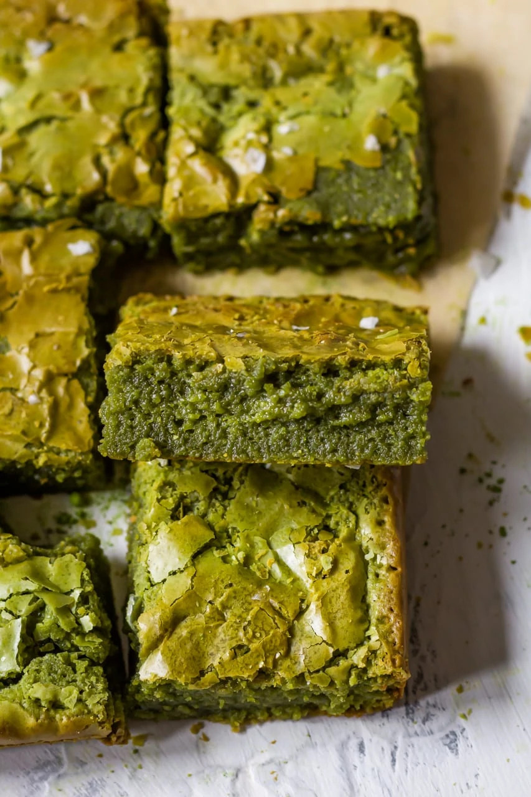
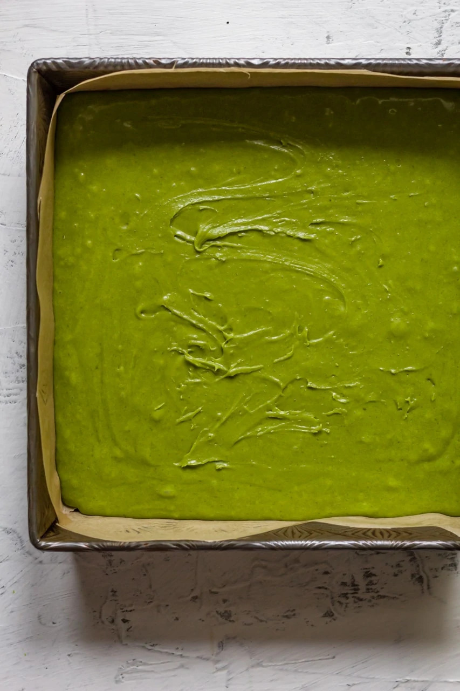

Fudgy Brown Butter Matcha Brownies
Cooking Therapy by Becca
My love affair with matcha continues with these brown butter matcha brownies. I think I am on a crusade to
matchify every classic dessert, and I am #notsorry about it! The reason I love adding matcha to desserts is not
only for the vibrant green color or that smokey aroma of matcha. I love doing it because it helps balance out
the sickening sweetness that exists in a lot of desserts. Case in point, brownies. Brownies are an amazing
dessert, but most of the time, I can only have one piece because of how sweet most brownies are. Adding matcha
to a classic brownie recipe balances out that sweetness, making it possible for you to have TWO instead of one.

Ingredients
-
Unsalted butter – I used browned butter for these brownies for that extra nutty flavor. I would
recommend
using unsalted butter, so you can control the amount of salt in your brownies.
-
White chocolate – In a typical brownie recipe, you often see chocolate being used, but since I
wanted that
green matcha color to shine through, I decided to substitute that with white chocolate.
-
Matcha powder – Matcha powder provides the color and slightly bitter taste of matcha to these
brownies. Make
sure to use high quality culinary grade matcha powder to get that vibrant green color. As always, I
use Aiya
culinary grade matcha powder. Use cookingtherapy10 to get 10% off your purchase.
-
Granulated sugar – Adds sweetness to these brownies.
-
Light brown sugar – Adds sweetness to these brownies and a moisture. You can also use dark brown
sugar for
this recipe. Dark brown sugar will make these brownies more fudgy and sweeter.
-
Eggs – Adds richness to these brownies. I would highly recommend room temperature eggs because that
makes it
easier to incorporate with other ingredients.
-
Vanilla extract – Adds flavor to the brownies. Substitute with vanilla paste or 1 vanilla bean.
-
Salt – Brings out the flavor of other ingredients.
-
All purpose flour – This is the main dry ingredient of the recipe. You can make this recipe gluten
free by
substituting with sweet rice flour. Keep in mind that this will change the texture of the brownie
and make
it more dry/less fudgy.
Making my matcha brownies
-
Preheat your oven to 350 degrees F. Grease a 8×8 baking pan with butter and line with parchment
paper. Set
aside. Next brown your butter. Heat unsalted butter over high heat until all the butter has melted.
Then
lower the heat to low and cook until brown bits start to appear. Remove from the heat. Next add
white
chocolate to a small bowl. Sift in the matcha powder. Pour the browned butter over the top and stir
until a
uniform green ganache appears. Set aside.
-
Combine granulated sugar, light brown sugar, eggs, vanilla extract, and salt in a large bowl. Use a
hand
mixer to whisk the mixture until it is thick and cream (5-10 minutes). While mixing, stream in your
matcha
chocolate ganache. Whisk until a uniform green mixture appears. Lastly, sift your flour into the
bowl. Using
a spatula, gently fold the flour into the green mixture. Be careful not to deflate the batter too
much. Mix
until just combined. Spoon the batter into your prepared pan.
-
Bake brownies for 20-30 minutes. After 20 minutes, take out the brownies and smack the pan onto a
flat
surface to get rid of some of the air bubbles. Sprinkle some flaky salt on top and put them back in
the
oven. Bake for another 10 minutes. Let brownies cool for 20 minutes before serving.

